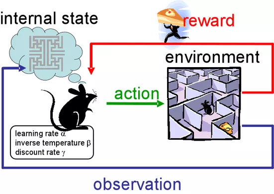
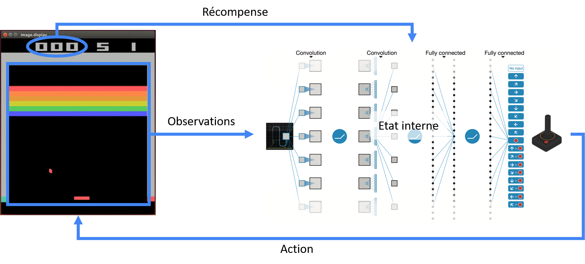
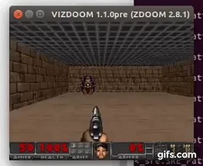
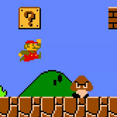

Un algorithme d'apprentissage par renforcement peut se décomposer comme indiqué sur l'image suivante.

Analysons ce schéma pour comprendre le fonctionnement d'un algorithme d'apprentissage artificiel. Nous avons un agent (la souris) placé dans un environnement (le labyrinthe) et cherchant à obtenir une récompense (un fromage). Les observations de l'agent vont induire un changement d'état interne qui entraine une action éventuellement récompensée par un fromage.
Un des exemples célèbre de l'apprentissage par renforcement est Google Deep Mind jouant au jeu casse brique.
Comme on le constate sur cette vidéo, au début l'algorithme n'est pas très performant et perd toutes les parties. Par contre, au bout de quelques entrainement, il devient excellent et découvre même des techniques pour gagner encore plus vite.
Reprenons le schéma vu précédemment pour l'analyser dans le cadre de l'exemple de cet algorithme.

L'agent ne perçoit que les pixels et le score et il ne peut agir que sur la barre. Il s'agit ici d'un réseau de neurone dont les observations sont les pixels du jeu. A chaque image, le réseau analyse les informations et en déduit une action à mener parmi bouger la barre à droite, à gauche ou pas du tout. Cette action est ensuite récompensée par une augmentation du score.
Comme l'a montré la vidéo, cette approche fonctionne très bien sur le jeu de casse brique et même sur beaucoup d'autres jeux Atari. Cependant ce modèle présente 2 défauts principaux : le manque de récompenses et la motivation par une récompense extrinsèque.
Pour un jeu Atari, il est facile et rapide de pouvoir déterminer si l'action menée à permis d'augmenter le score. En effet, il ne se passe que quelques images (le temps pour la balle d'atteindre une brique) avant d'obtenir cette récompense. Par contre dès que le jeu se complexifie, par exemple dans le cas du jeu VizDoom1, il devient beaucoup plus difficile pour l'agent de déterminer quelle action à conduit à la récompense.
En effet dans ce jeu le but est d'explorer un niveau tout en évitant de se faire tuer par des ennemis. Il est possible de les éviter ou de les tuer à notre tour. Les niveaux sont complexes et une action (par exemple la l'élimination ou non d'un ennemi) peut avoir des conséquences lointaines sur le jeu sans que l'agent ne s'en rende compte.

Avant de traiter du problème de la motivation extrinsèque, il est important de bien comprendre ce qu'est la motivation extrinsèque.
En psychologie, on définit la motivation extrinsèque comme la motivation pour avoir une récompense ou éviter une punition. Elle se définit par opposition à la motivation intrinsèque qui est la motivation par le plaisir personnel.
Un algorithme d'apprentissage par renforcement nécessite la création d'une récompense extrinsèque pour pouvoir être entrainé correctement. Cependant cette récompense est loin d'être toujours évidente. Prenons l'exemple du célèbre jeu Mario Bros, le personnage Mario parcourt des niveaux d'un point A à un point B, il peut interagir avec son environnement en cassant des blocs qui peuvent lui rapporter des pièces ou des bonus. Il doit également éviter des ennemis qu'il peut éliminer en leur sautant dessus. A chaque interaction (pièce récupérée, ennemi éliminé), le joueur obtient des points.

Si l'on souhaitait entrainé un algorithme d'apprentissage par renforcement, il semble difficile de choisir une bonne récompense extrinsèque à notre agent :
Finalement, aucune de ses solutions ne semble optimale et ce procédé consiste tout de même à définir à la main la récompense souhaitée, ce qui est loin d'être très évolutif.